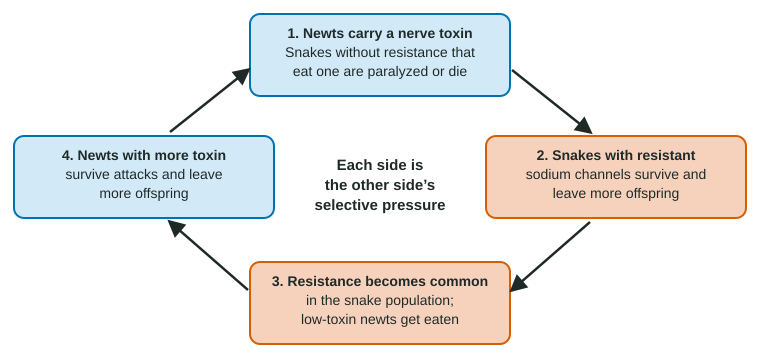

Evolution is often pictured as something slow and ancient, read from fossils. But wherever an environment changes, populations change with it, and some change fast enough to measure in a few years. This page shows how to recognize continuing evolution and works through the main examples: resistance to drugs and pesticides, fast-changing viruses, species that evolve in response to each other, and genomes changing in front of researchers.
Why evolution never stops
Natural selection needs two things: heritable variation and an environment in which some variants leave more offspring than others. Neither ever runs out. Mutation keeps adding new alleles to every population, and environments keep shifting: new drugs and chemicals, new diseases, climate change, and other species that are themselves evolving. Each change alters which alleles raise fitness, so allele frequencies keep moving. That is all evolution is: a change in the genetic makeup of a population over generations.
Evolution is easiest to see in organisms with short generations and huge numbers, such as bacteria, viruses and insects, and under strong selection, such as a chemical that kills most of a population.
Resistance: drugs, insecticides and herbicides

You met antibiotic resistance as a case of unintended selection. Pesticides work the same way (Figure 1):
- Before spraying, a few insects carry an allele that happens to protect them, because random mutation produced it at some point.
- Spraying kills most susceptible insects; carriers survive more often.
- Survivors breed, so the next generation has a larger share of carriers.
- Repeated spraying repeats the selection, and within a few years most of the population is resistant.
Examples are everywhere. Mosquitoes in many malaria regions now carry kdr alleles, versions of a nerve sodium-channel gene that pyrethroid insecticides and DDT bind poorly. The Colorado potato beetle has evolved resistance to dozens of insecticides. Palmer amaranth, a farm weed, resists the herbicide glyphosate in a striking way: resistant plants carry from tens to more than a hundred copies of the gene for EPSPS, the enzyme glyphosate blocks, and make so much enzyme that some stays active.
Resistance often has a cost. An altered sodium channel or a doubled gene can make an insect or plant slightly less fit when the chemical is absent. When spraying stops, carriers then leave slightly fewer offspring and the allele declines, but usually slowly, over many generations. This is why rotating chemicals with different targets slows resistance, and why resistance seldom disappears quickly.
| Antibiotic resistance | Insecticide resistance | Herbicide resistance | |
|---|---|---|---|
| Population | Bacteria | Insects such as mosquitoes | Weeds |
| Selective pressure | Antibiotic use in people and livestock | Sprays, treated bed nets | Repeated spraying of fields |
| Example of a genetic change | Gene for an enzyme that breaks down the drug, often on a plasmid | Altered sodium channel the insecticide binds poorly | Many extra copies of the target enzyme's gene |
| Source of the allele | Random mutation (or, in bacteria, gene transfer) before the chemical was used | ||
Viruses: evolution at high speed
Viruses are the fastest evolvers we know. Many have RNA genomes copied without proofreading, a single infected person can produce billions of particles a day, and a new generation takes hours. So every possible single mutation in a viral genome may arise many times a day in one patient.
- Influenza keeps changing the surface proteins that antibodies recognize. People who are immune to last year's forms are more easily infected by changed forms, so those spread. That is why a new flu vaccine is made each year.
- HIV evolves inside each patient. Given one drug, resistant variants that already exist take over within weeks. Treatment therefore combines several drugs at once.
- Emerging viruses, such as new coronaviruses, arise when a virus that infects animals gains mutations that let it infect and spread among people. Variants then compete, and those that spread more easily replace the others.
Worked example: why three drugs at once? Suppose a patient makes 1010 new HIV particles a day, and 1 in 105 new genomes resists drug A (the same for drugs B and C, independently).
Step 1. One drug. Resistant to A: 1010 × 10−5 = 105 = 100,000 particles a day. Drug A alone will fail. Step 2. Two drugs. Resistant to A and B: 1010 × 10−5 × 10−5 = 1 particle a day. Step 3. Three drugs. 1010 × 10−15 = 10−5 a day, about one particle every 100,000 days. Step 4. Conclude. Combined drugs multiply the odds against resistance. Given one after another, each drug would meet a large population already resistant to the previous ones. (These are rounded model numbers, not clinical data.)
Coevolution: two species, each the other's pressure

In coevolution, two species each act as a selective pressure on the other (Figure 2). Rough-skinned newts in western North America carry a nerve toxin that blocks sodium channels. Garter snakes that eat them are paralyzed unless their sodium channels carry mutations that the toxin binds poorly. Where newts carry the most toxin, snakes are the most resistant; where newts carry little, snakes are easily paralyzed. Each step up in toxin favors more resistant snakes, and each step up in resistance favors more toxic newts: an evolutionary arms race.
Coevolution need not be a fight. Flowers and the animals that pollinate them, such as a long-spurred orchid and the long-tongued moth that reaches its nectar, also shape each other. A pathogen and its host coevolve too: when a rabbit-killing virus was released in Australia in 1950, the virus evolved to be somewhat less lethal (rabbits that stay alive longer pass on more virus through mosquito bites), while the rabbits evolved greater resistance.
Genomes changing in front of us
Sequencing lets scientists compare a population's DNA across time. In a long-term experiment begun in 1988, twelve populations of E. coli descended from one cell have been grown in identical flasks for tens of thousands of generations, with samples frozen every 500 generations. Revived ancestors can be grown side by side with their descendants, so fitness gains can be measured directly. All twelve populations grew faster, quickly at first and then more slowly, each through mostly different mutations. In one population, the ability to use citrate as food appeared after about 31,000 generations, through a duplication that placed a gene next to a different promoter; replays from frozen samples showed it depended on earlier mutations. Genomic changes of every kind (point mutations, duplications, deletions, moved genes) were recorded as they spread.
How to recognize continuing evolution in a question
- Look for a change in a population across generations: allele frequencies, the share of organisms that resist a drug, genome sequences. A single organism changing during its life is not evolution.
- Identify the selective pressure (the drug, the predator, the host's immunity) and the heritable variation it acts on.
- Remember that variation comes first: the pressure selects among existing alleles; it does not create the ones it favors.